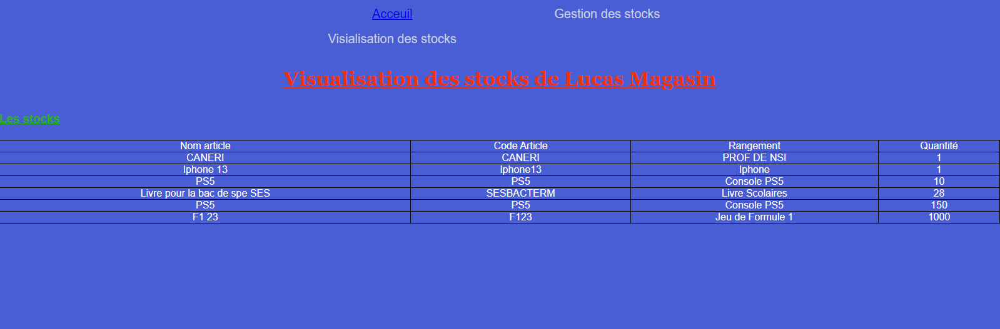
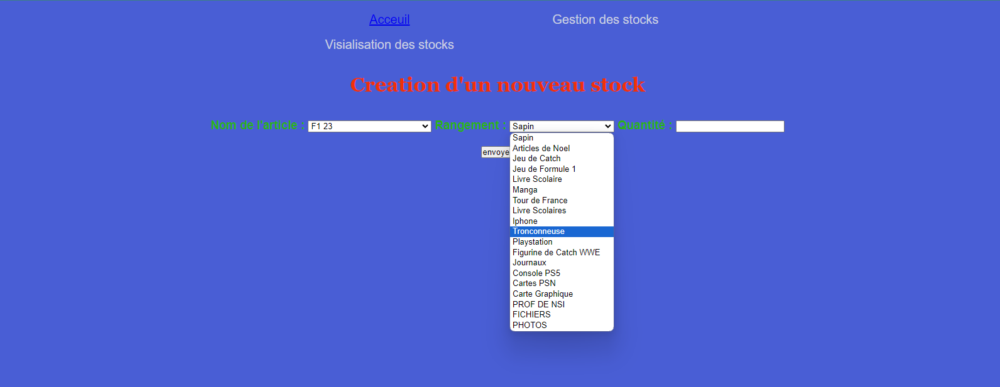
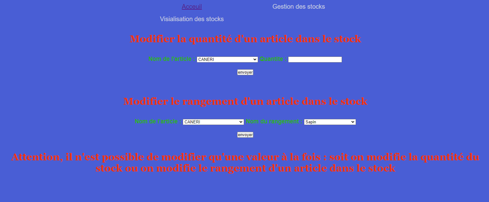
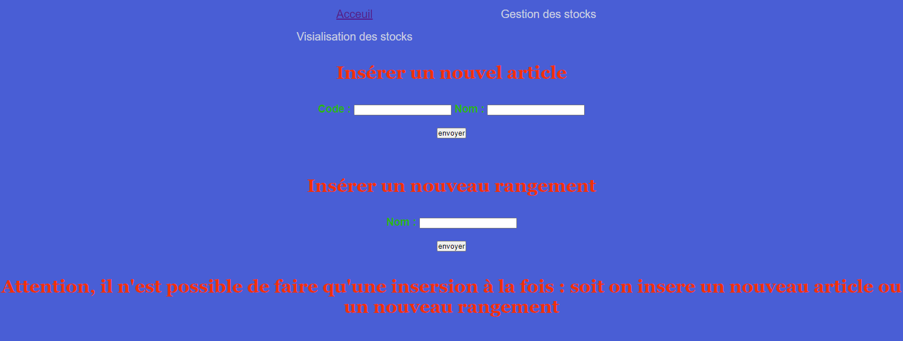
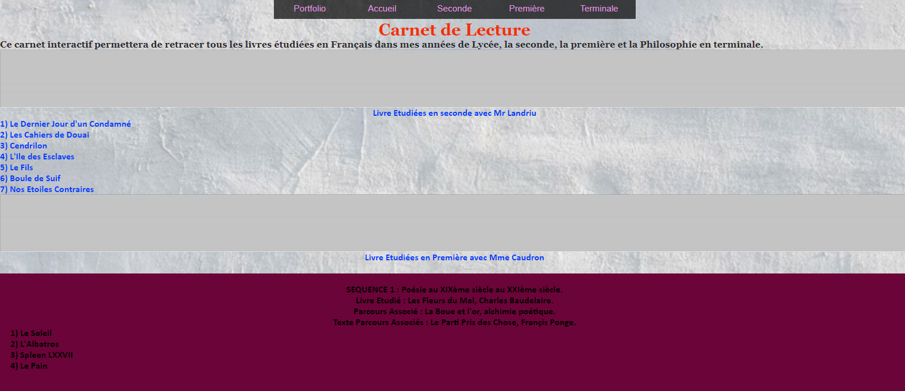
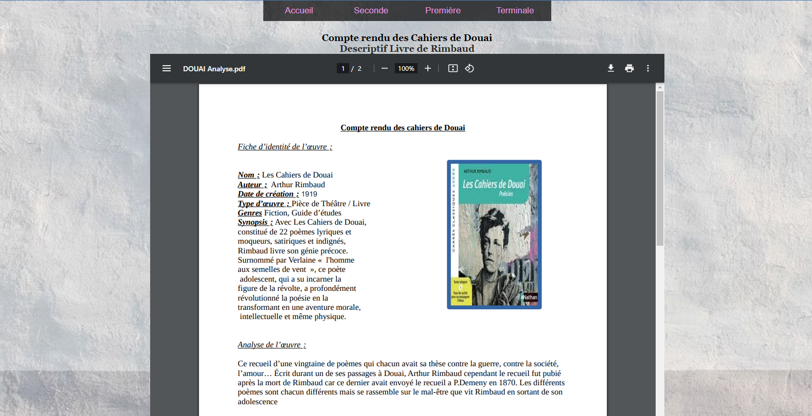

Site avec base de données
Ce projet a été réalisé a la suite d'un devoir sur les bases de données (SGBDR), codé en php, la page ne marche qu'avec l'activation d'uwamp et de mySQL.
Dans ce projet, le but été d'aller plus loin que le programme prévu et de mixer le codage en PHP et le SQL.
Le projet devant se lancer sous uwamp, je vous met a disposition des photographies ainsi que le code pour faire le site.
Je pourrais vous montrer avec plaisir à l'entretien le site sous ses formes.




Le projet est si dessous :
Projet
Site internet
Ce site, je l'ai crée en 2021 en classe de seconde, lors d'un projet en Francais pour le carnet de lecture de l'année, j'ai décidé de le faire en site internet, c'était original.
Ce site montre mes débuts en codage et on peut voir la différence avec ce que je fais actuellement.


Le site si dessous :
Projet
Bot Discord
Ce projet est d'abord pour un serveur discord que je possédais à l'epoque, depuis ce projet à été mis a l'arrêt car je n'avais plus le temps pour continuer.
Ce Portfolio
J'ai crée ce portfolio afin de montrez aux examinateurs de mon dossier sur Parcoursup, un avant-goût de ce que je pourrais produire dans les prochaines années.
J'ai l'objectif de développer a posteriori ce portfolio, de l'ameliorer afin qu'il me ressemble et me represente bien.
L'acceuil du portfolio :
Retour l'acceuil